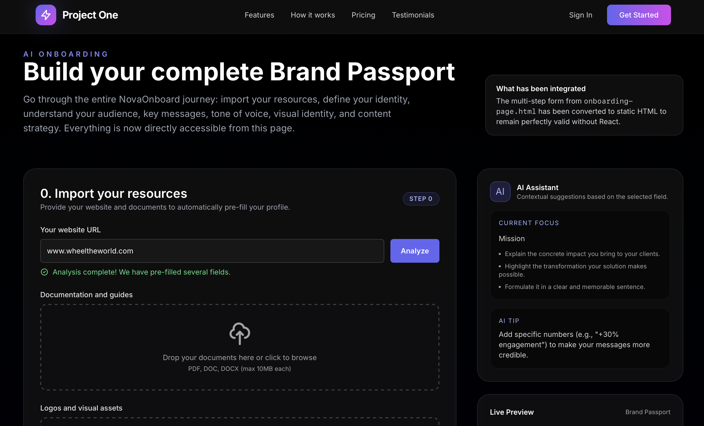
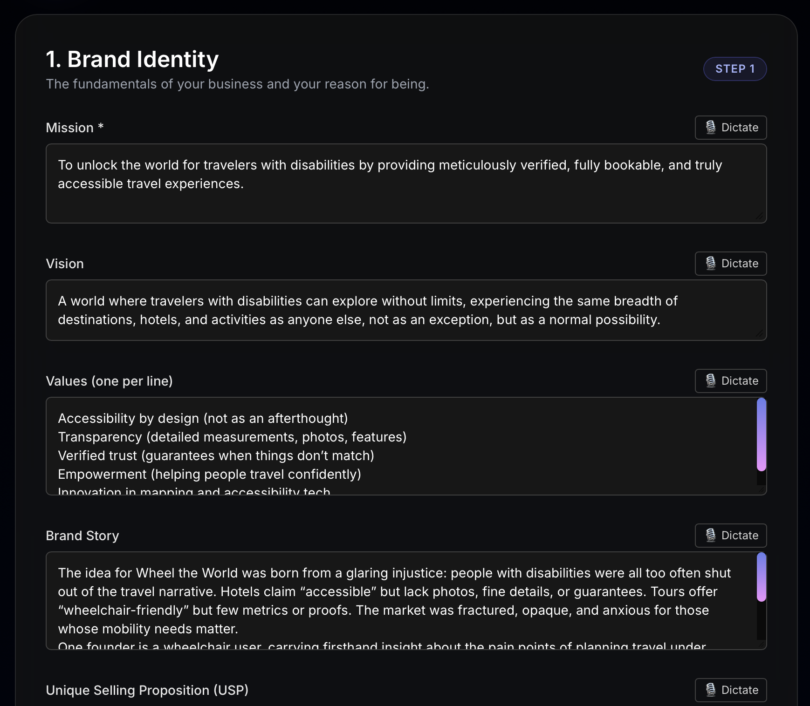
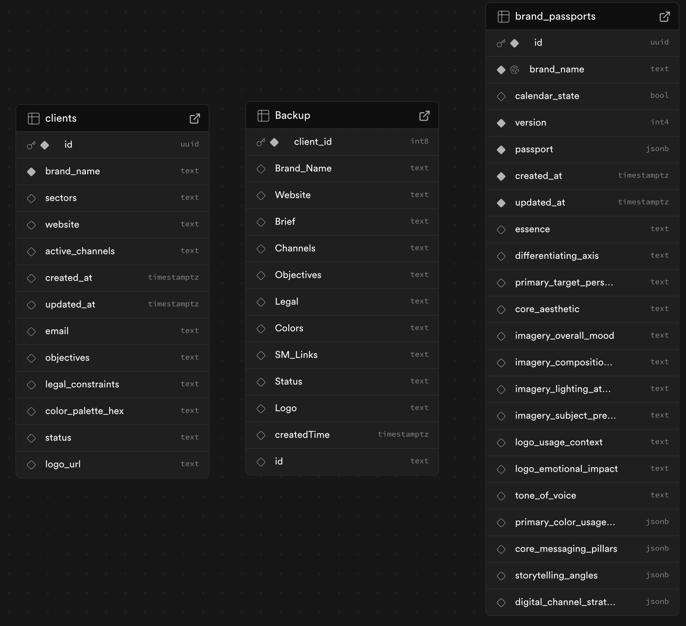
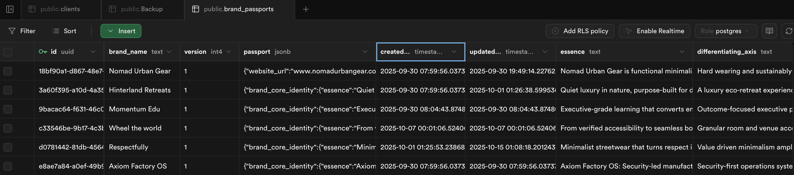

Step 1: AI-Powered Onboarding
The process begins with our intelligent onboarding interface. The user provides a single piece of information: their website URL. This action triggers our backend Language Model (LLM) to perform a deep analysis of the site's content, structure, and messaging.
Instead of presenting a blank form, our system instantly pre-fills the entire brand questionnaire. It synthesizes key elements like the company's mission, vision, values, and unique selling proposition directly from the analyzed web content. This transforms a tedious, multi-hour task into a simple review and refinement process.
The user remains in full control, with the ability to edit, refine, and add nuance to the AI-generated fields, ensuring the final output is perfectly aligned with their vision.
Step 2: The Automation Core (n8n Workflow)
Once the user validates the onboarding form, the data is sent to our automation backbone, built on n8n. This workflow acts as the central nervous system for the entire process.
The initial workflow is responsible for several critical tasks:
- Grab Information: It receives the complete, user-approved data from the web form.
- Generate Passport: The data is passed to a dedicated AI message model, which structures, formats, and enriches the information into a comprehensive 'Brand Passport'.
- Parse & Format: The output is meticulously parsed into a clean, structured JSON object, ready for database storage.
- Store in Database: The final JSON passport is sent to our Supabase database, creating a new, permanent record for the brand.
Step 3: The Brand Passport Hub (Supabase)
Every Brand Passport generated by our system is stored in a robust and scalable Supabase database. This isn't just a backup; it's a living, queryable "single source of truth" for each client's brand identity.
The Brand Passport becomes a structured asset, allowing our automation workflows to instantly access any piece of brand information—from core messaging pillars to the specific hex code of a primary color.
The `brand_passports` table contains the complete JSON object, alongside key metadata like version, creation date, and high-level brand essence identifiers for quick filtering and analysis.
Step 4: The Automated Content Factory (n8n)
With the Brand Passport securely stored, our main content generation workflow can be initiated. This powerful, multi-step n8n process leverages the Supabase data to produce high-quality, on-brand content at scale.
The workflow orchestrates a complete production pipeline:
- Passport Ingestion: It fetches the relevant Brand Passport from Supabase.
- Content Creation: It uses the passport's tone of voice, messaging pillars, and storytelling angles to generate written content (e.g., social media posts) via an LLM.
- Image Generation: Simultaneously, it uses the passport's visual guidelines (core aesthetic, mood, composition) to create or select corresponding images.
- Approval & Formatting: The generated assets are prepared for client approval. Once approved, the workflow formats them for each specific social media channel (e.g., Instagram Post, LinkedIn Update).
- Publication: Finally, the approved and formatted content is published directly to the client's connected social media accounts.